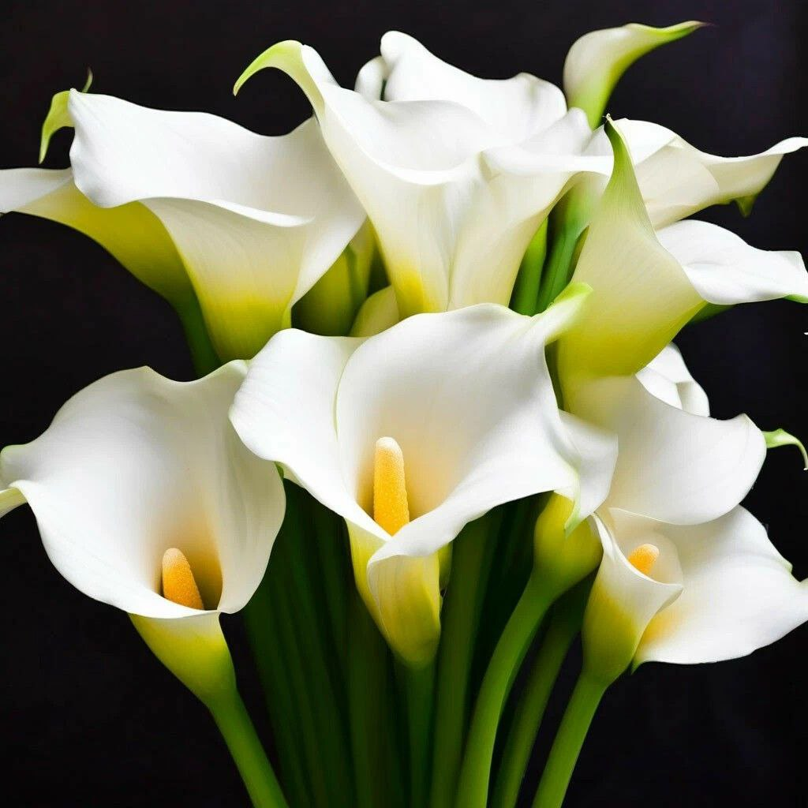

<!DOCTYPE html>
<html lang="en">
<head>
  <meta charset="UTF-8">
  <title>Title</title>
</head>
<body>

</body>
</html>
<!DOCTYPE html>
<html lang="en">
<head>
  <meta charset="UTF-8">
  <meta http-equiv="X-UA-Compatible" content="IE=edge">
  <meta name="viewport" content="width=device-width, initial-scale=1.0">
  <title>Каллы</title>

  <script src="libs/gsap/gsap.min.js" defer></script>
  <script src="libs/gsap/ScrollTrigger.min.js" defer></script>
  <script src="libs/gsap/ScrollToPlugin.min.js" defer></script>

  <link rel="stylesheet" href="css/style.css">
  <link rel="stylesheet" href="css/honey-details.css">
  <script src="js/honey-details.js" defer></script>
</head>
<body>
<header class="main-header">
  <div class="logo-container">
    <a href="index.html">
      
    </a>
  </div>

  <div class="buttons">
    <a href="index.html" class="btn">Каталог</a>
    <a href="about.html" class="btn">О нас</a>
  </div>
</header>

<section class="honey-details">
  
  <div class="honey-details__info">
    <h2>Калла</h2>
    <p>Каллы — утончённые и элегантные цветы, символизирующие чистоту, изящество и утонченную красоту. Их изысканные формы и гладкие лепестки делают их идеальным выбором для стильных букетов и торжественных композиций.</p>

    <h2>Почему стоит выбрать?</h2>
    <ul>
      <li>Лаконичная и изящная форма, придающая букету аристократичность.</li>
      <li>Долговечность — сохраняют свежесть до 10–14 дней.</li>
      <li>Широкая палитра оттенков: от классического белого до ярких бордовых, розовых и жёлтых тонов.</li>
    </ul>

    <h2>Особенности</h2>
    <p>В нашем ассортименте представлены классические и мини-каллы различных оттенков. Благодаря своей элегантности и минимализму, они идеально подходят для свадебных букетов, стильных композиций и подарков, подчёркивающих изысканный вкус.</p>
  </div>
</section>
</body>
</html>
